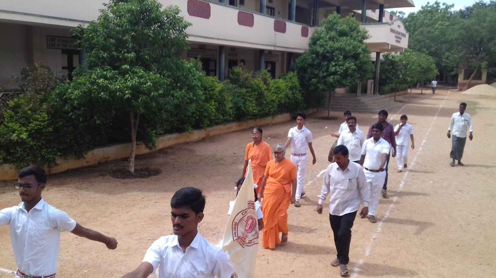

Special Cultural Celebrations
• • •Throughout the year, the Vidyalaya celebrates festivals and cultural events that instil values, devotion, and a sense of heritage in every student.
Aksharabhyasam
Pujya Swamini Seelananda Amma initiates newly joined nursery children by holding their tiny fingers and making them write "Om Namah Sivaaya" in a plate of Akshata (rice) with turmeric rhizome. Teaching begins with Samoohika Pooja to Goddess Saraswati.
Guru Poornima
Children learn about the great literary works of Sree Veda Vyasa Bhagawan and perform Samoohika Pooja to Veda Vyasa, honouring the sacred Guru tradition.
Krishnashtami
A colourful demo celebration where students dress as little Krishnas and Gopikas. Boys enjoy pot breaking while Gopikas pull the rope, and seniors form pyramids. All relish sweet butter after the programme.
Ganesh Chaturthi
Clay moulding competitions where children create Lord Ganesha murthis. Students speak about the symbolism of Lord Ganesha, followed by pooja to their own creations and prasadam distribution.
Mata-Pitru Puja
On November 5th, Pujya Mataji's Jayanthi, children perform pooja at the feet of their parents. Parents then participate in Paduka Puja at Mathru Mandir, the Samadhi altar of Pujya Mataji, followed by Annadanam.
Gita Jayanthi Mahotsavam
A grand 7-day celebration with Gita chanting competitions, Gita Homam by 10th class students dressed traditionally, study classes for teachers, and speeches on Gita chapters. All participate in competitions with prizes.
Sankranthi Carnivals
Children and parents celebrate demo Sankranthi — decorating bulls from the Ashram, girls making Pongal with enthusiasm, and a boy in the disguise of "Hari Das" singing the Lord's name and receiving alms.
National Festivals
Independence Day features children dressed as freedom fighters, with a tribute to one particular leader each year. Republic Day is celebrated with march past, pyramids, and full patriotic fervor.
Vidyalaya Anniversary
Celebrated on February 8th — the Formation Day of Chinmayaranyam (Aavirbhaava Dinotsavam). Celebrations include Sports Day, prize distributions, skits, dances, and cultural programmes by students.
Maagha Panchami
Samoohika Pooja is performed to Goddess Saraswati on the eve of Saraswati Jayanthi, concluding with the distribution of Prasadam to all students.
Founder's Aradhana Day
On Pujya Mataji's Aradhana (Samadhi Day), students and staff carry out a devotional procession with Pujya Mataji's photo through the lanes of Ellayapalle village.
Photo Gallery
• • •




Support Our Students
Help us nurture young minds with spiritual values and cultural heritage. Your contributions make a difference.
Contribute Now